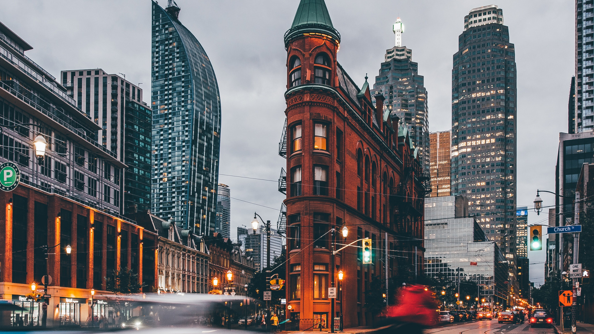

Toronto
Toronto is the capital city of the Canadian province of Ontario. With a recorded population of 2,731,571 in 2016, it is the most populous city in Canada and the fourth most populous city in North America. The city is the anchor of the Golden Horseshoe, an urban agglomeration of 9,245,438 people (as of 2016) surrounding the western end of Lake Ontario, while the Greater Toronto Area proper had a 2016 population of 6,417,516. Toronto is an international centre of business, finance, arts, and culture, and is recognized as one of the most multicultural and cosmopolitan cities in the world.
CN Tower
The CN Tower is a 553.3 m-high concrete communications and observation tower located in the downtown core of Toronto, Ontario, Canada. Built on the former Railway Lands, it was completed in 1976. Its name "CN" originally referred to Canadian National, the railway company that built the tower. Following the railway's decision to divest non-core freight railway assets prior to the company's privatization in 1995, it transferred the tower to the Canada Lands Company, a federal Crown corporation responsible for real estate development.
The CN Tower held the record for the world's tallest free-standing structure for 32 years until 2007 when it was surpassed by the Burj Khalifa, and was the world's tallest tower until 2009 when it was surpassed by the Canton Tower. It is now the ninth tallest free-standing structure in the world and remains the tallest free-standing structure on land in the Western Hemisphere. In 1995, the CN Tower was declared one of the modern Seven Wonders of the World by the American Society of Civil Engineers. It also belongs to the World Federation of Great Towers.
It is a signature icon of Toronto's skyline and attracts more than two million international visitors annually.
Casa Loma

Casa Loma (Spanish for "Hill House") is a Gothic Revival style mansion and garden in midtown Toronto, Ontario, Canada, that is now a historic house museum and landmark. It was constructed from 1911 to 1914 as a residence for financier Sir Henry Pellatt. The architect was E. J. Lennox, who designed several other city landmarks. Casa Loma sits at an elevation of 140 metres above sea level, 66 metres above Lake Ontario.
Due to its unique architectural character in Toronto, Casa Loma has been a popular filming location for movies and television. It is also a popular venue for wedding ceremonies, and Casa Loma can be rented in the evenings after the museum closes to the public.
Gooderham Building
The Gooderham Building, also known as the Flatiron Building, is an historic office building at 49 Wellington Street East in Toronto, Ontario, Canada. It is located on the eastern edge of the city's Financial District (east of Yonge Street) in the St. Lawrence neighbourhood, wedged between Front Street and Wellington Street in Downtown Toronto, where they join up to form a triangular intersection. Completed in 1892, the red-brick edifice was an early example of a prominent flatiron building.
The Gooderham Building is the focal point of one of Toronto's most iconic vistas: looking west down Front Street towards the building's prominent rounded corner, framed on the sides by the heritage commercial blocks along Front Street, and with the skyscrapers of the Financial District towering in the background. The CN Tower is also visible from certain angles behind Brookfield Place. This vista frequently appears in imagery of the city.